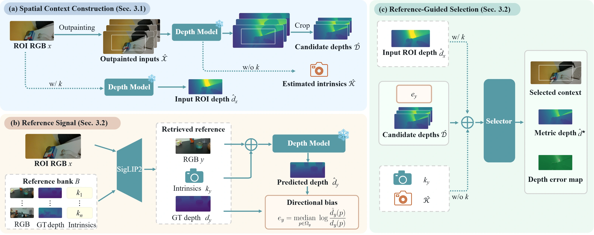
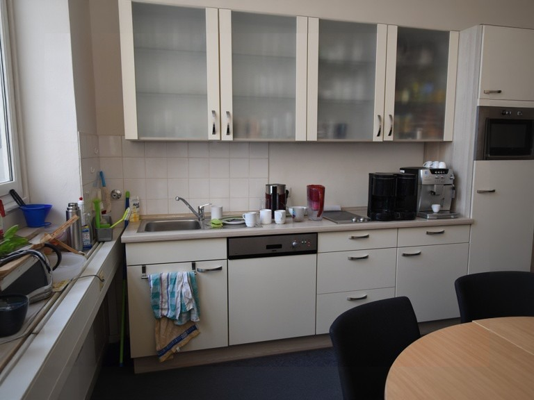

Outpaint the surroundings
An outpainting model (OneReward) extends the scene beyond the image borders. The original pixels are pasted back, so only the generated surroundings act as context. Different seeds give N = 3 candidate contexts.
Real stored predictions from the paper's evaluation (cropped queries, without GT camera, mixed reference bank), in metres. Points are un-projected with the ground-truth intrinsics; dark dots are ground truth. Twelve scenes from NYUv2, KITTI, ETH3D, HAMMER, iBims-1 and DIODE.
Overview video
Abstract
Monocular metric depth estimation is inherently ill-posed: a single image provides only a keyhole view of the scene, causing models to misestimate absolute scale despite recovering sharp relative geometry. While in-context learning (ICL) steers models through inputs alone, existing visual ICL frameworks focus on instructing generalist models on which task to perform. We ask a different question: can context improve how well a fixed specialist model executes its task?
We therefore propose ContextDepth, a training-free spatial ICL framework that improves pretrained metric depth estimators without updating model weights or modifying raw query pixels. First outpaint, then select. ContextDepth surrounds the query with diverse outpainted contexts to produce candidate depth predictions. We retrieve similar scenes from a reference bank of images with ground-truth depth, including in-domain examples. The model's tendency to overestimate or underestimate depth on these references then guides candidate selection, yielding the final depth prediction.
We evaluate six mainstream depth models on six benchmarks, with and without camera intrinsics. On cropped images, ContextDepth improves δ1 by up to 22.65 percentage points on Depth Anything 3. On full images, additional context remains useful, but gains are smaller and less consistent across models. To further examine this observation, we vary the amount of real context with and without camera intrinsics to study diminishing returns. We find that not all models use additional context effectively, and their sensitivity to input field of view (FOV) varies. ContextDepth thus offers a training-free approach to improving metric depth estimation through spatial context expansion and reference guidance, while probing models' FOV sensitivity and efficiency in using additional context. We will release all code and provide ContextDepth as a plug-and-play skill.
Method
ContextDepth treats the input, not the weights, as the lever. It never rescales a prediction: the output is always one of the frozen model's own depth maps.
An outpainting model (OneReward) extends the scene beyond the image borders. The original pixels are pasted back, so only the generated surroundings act as context. Different seeds give N = 3 candidate contexts.
The same frozen depth model runs on every expanded image and each prediction is cropped back to the query region. Identical pixels now come with several scale hypotheses.
A similar scene with known depth is retrieved (SigLIP2). The sign of the model's error on it, the , tells which candidates move the scale the right way.
selection rule
ey = medianp ∈ Ωy log dy(p)dy(p)
The model predicts the reference y and is compared with its ground truth. ey > 0: it overestimates depth in scenes like this; ey < 0: it underestimates.
ℰ = { i : ey · Δi < 0 }, i⋆ = arg mini ∈ ℰ δ(ki, ky)
The anchor is the candidate whose estimated camera is closest to the reference's. Candidates that shift depth against the bias are eligible; the one with the closest camera wins. If none qualifies, the anchor is kept.
i⋆ = arg maxi ∈ ℰ |Δi|, Δi = medianp log di(p)dx(p)
The query-only prediction is the baseline. Among candidates that correct the bias, the largest change is selected; otherwise the query-only prediction is returned.

Quantitative results
δ1 accuracy on 3,406 images from six benchmarks, with no test-time scale or shift alignment. Outpainting alone helps most models; reference-guided selection adds gains on top in every setting.
δ1 ↑ (%), 3,406 images. Outpaint uses seed 0; Outpaint + Select uses the mixed bank (N = 3). Shading shows the change from Query only. † Depth Pro is analysed in the probe below.
δ1 ↑ (%) on the 2,635 non-DIODE queries. Q: Query only; O: Outpaint (seed 0); M / C / D: Select with the mixed, cross-dataset and fixed-DIODE reference banks. The mixed bank, which includes in-domain examples, beats a single outpainting in all 24 settings.
Probe
Real context is restored ring by ring, with no generation and no selection. What does each frozen model do with the wider view?

Nested inputs Q0 to Q4 span 66.7%, 75%, 83.3%, 91.7% and 100% of each image dimension. For each adjacent pair, the frozen model is run on the narrower and on the wider input, both predictions are scored on the pixels of the narrower input, and the difference in δ1 is the marginal gain of the added real context. Results are averaged over 3,406 images.
GT camera given: gains come from the new content alone
MoGe and DA3 keep gaining from every ring. UniDepth V2 and UniK3D saturate sooner. Depth Pro barely responds.
camera estimated: the model must also absorb the FOV change
MoGe and DA3 stay positive. UniDepth V2 stalls at −0.01. Depth Pro turns negative: the wider view hurts.
Marginal δ1 gain (points) per step, averaged over 3,406 images from six benchmarks. Hover a step or a model; in probe 2 the dashed line shows the same model with the GT camera.
Limitations & outlook
Outpainting may add misleading scale cues, and FOV changes can reduce accuracy for sensitive models. Context extent and reference choice need validation for each model. Adaptive expansion and more reliable context selection remain future work.
Better generative models could provide more useful surroundings, and stronger video models could extend outpainting to earlier or later moments, expanding context in time as well as space. Reference objects of known dimensions could anchor scale, and training with expanded contexts could improve FOV robustness.
Agent skill
The repository ships one skill. Give an agent the prompt and it clones the code, builds the environment and runs ContextDepth. Ask for a test and it reproduces the crop block of Table 1. Tell it how your own model is called and it plugs that model in.
Citation
@misc{contextdepth,
title = {ContextDepth: Boosting Metric Depth Estimation via Richer Context},
author = {Anonymous},
note = {Preprint},
year = {2026}
}